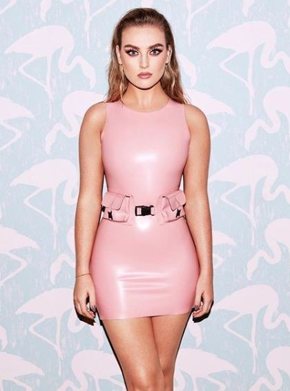
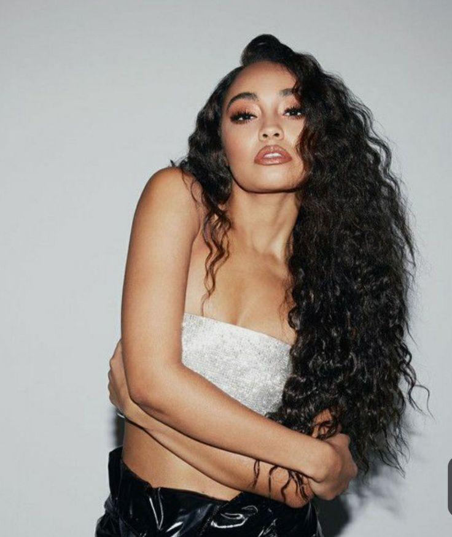

little mix is a british girls group formed in 2011.The group consists of Jade Thirlwall, Perrie Edward and Leigh-anne pinnock.The band was originaally called Rhythmix, However the girls were forced to change their name due to a children charity being called the same and little mix was born. They have achieved 5 number one singles so far. They recently dropped their sixth album CONFETTI
Here is a brief biography of each member;
Jade Thirlwall
Jade is one of the song writers in the band.
she is 27years old
she was born in south shields.
She was nominated in the inspirational personality category at this years ethnicity awards. Jade is also an LGBTQ + ally, she collected an a award at the LGBTQ awards in 2019 on behalf of little mix for change makers
Perrie Edwards

perrie Edward is 27years old.
Her vocals are to die for.
She is from south field.
she has 2 siblings.
she became the new face for the itallian brand superga and release her first designed collection of shoes
Leigh-Anne Pinnock

She was born in high wycombe in Backinghamshire.
she is 27years old.
she is also a song writer in the little mix band.
she co-owns a swim-wear brand called in a Seashell.
She won the Equality award at the Ethnicity Awards alongside with band member jade thirwall
They were recognized for their work towards racial equality in the UK
.
List of their songs
To learn more about little mix and the songs they have dropped over the years go to Learn more. They have featured other musicians and rappers like jason derulo in the Secret love song, the have also featured Nicki minaj in the Woman like me song and also on their very recent drop Confentii they have feautured SaSweetie.Below is a list of their songs:
shout out to my ex
hair
confetti
no more sad songs
secret love song
strip
Heart break song
move
No time for tears
sweet melodies
List of my favourite songs
little mix has been my favourite band since i was in highschool. i love them because i can relate well with most of their songs. one of my favourite song being black magic, strip and woman like me. Their message is mostly to encourage and empower women to be comfortable in their own skin and be unapologetic about who they are. Below are a list and links to these songs go check them out and see for yourself, they are AWESOME!